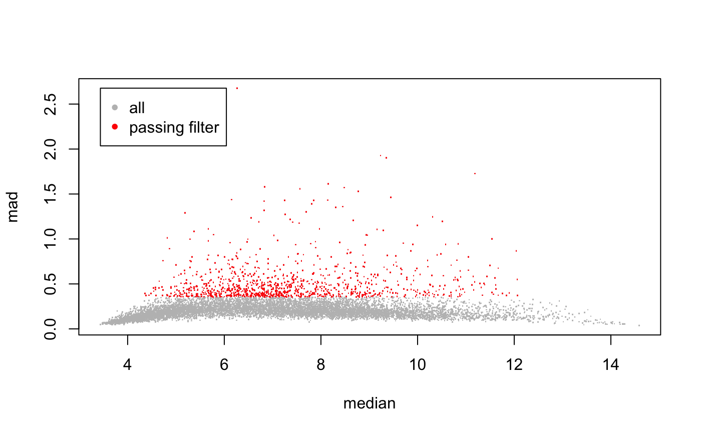
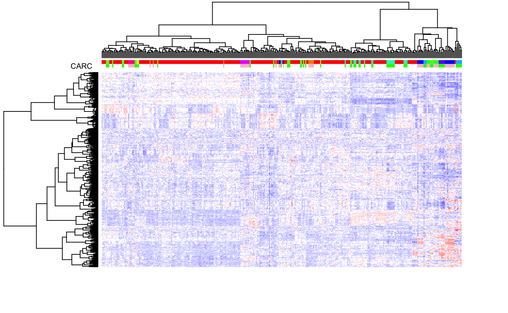
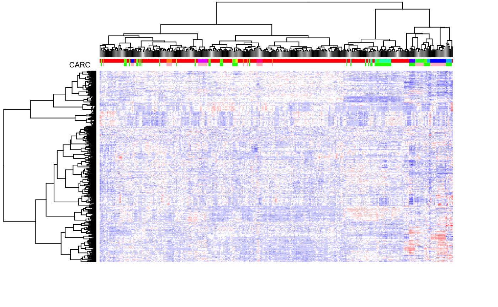
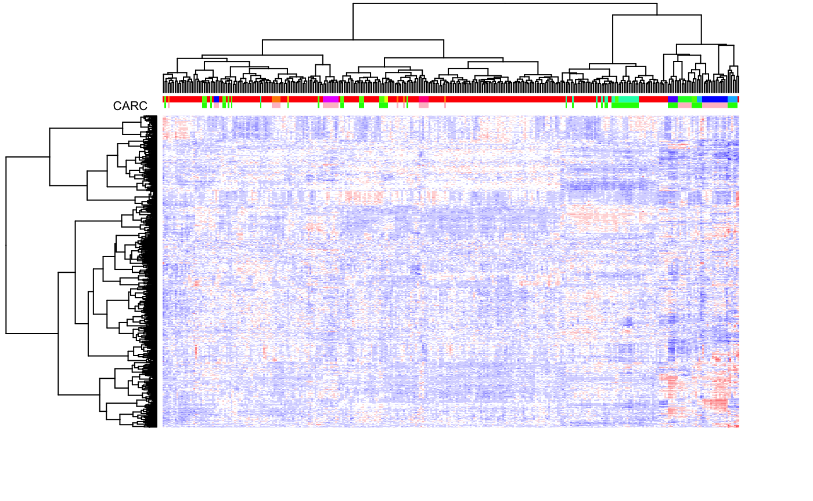
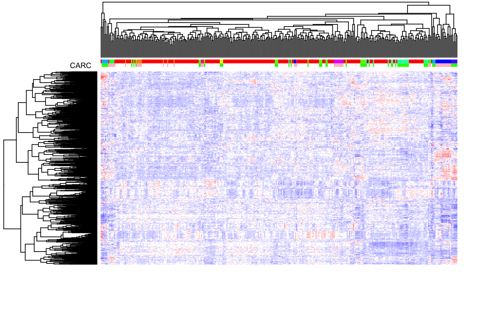
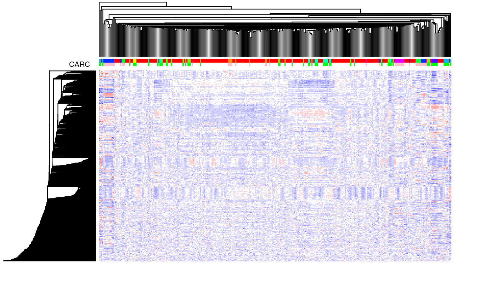
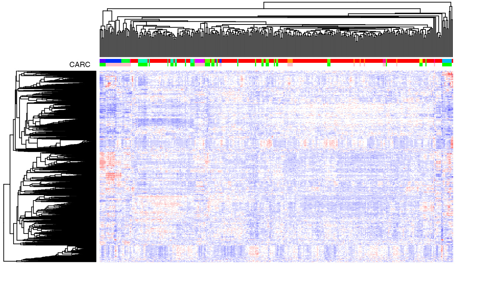

We will use the DrugMatrix subset previously described for our examples. This data corresponds to chemical perturbation experiments, whereby rats are exposed to different chemicals, and their liver’s RNA is profiled.
We upload the data and perform a drastic variation filtering to obtain a small and easy to manage dataset.
data(dm10) DM <- variationFilter(dm10,ngenes=1000,do.plot=TRUE,verbose=FALSE)

Let us analyze the data by carrying out hierarchical clustering. We’ll use heatmap.plus to visualize the data. Let us first define a simple function to create a color gradient to be used for coloring the gene expression heatmaps.
colGradient <- function( cols, length, cmax=255 ) { ## e.g., to create a white-to-red gradient with 10 levels ## ## colGradient(cols=c('white','red'),length=10) ## ## or, to create a blue-to-white-to-red gradients with 9 colors (4 blue's, white, 4 red's) ## ## colGradient(cols=c('blue','white','red'),length=9) ## ramp <- colorRamp(cols) rgb( ramp(seq(0,1,length=length)), max=cmax ) }
Next, let us perform the actual clustering. While the function heatmap.plus can carry out hierarchical clustering internally, we explicitely call hclust outside the function call to illustrate its use (this will also save computation time should one want to call heatmap.plus multiple times with different color coding or other changes that would not affect the clustering).
Notice that the heatmap color is somewhat saturated. In the module R/Heatmaps.Rmd we present additional visualization functions that do a better job at color-coding the heatmap.
## color coding of the samples indicating carcinogenicity status and chemical chemicals <- unique(pData(dm10)[,"CHEMICAL"]) CSC <- cbind(CARC=c("white","green","pink")[match(pData(dm10)[,"Carcinogen_liv"],c(NA,"NON-CARC","CARCINOGEN"))], CHEM=rainbow(length(chemicals))[match(pData(dm10)[,"CHEMICAL"],chemicals)]) ## color gradient for the expression levels (blue=down-regulated; white=neutral; red=up-regulated) bwrPalette <- colGradient(c("blue","white","red"),length=13) ## cluster rows (genes) and columns (samples) hc.row <- hclust(as.dist(1-cor(t(exprs(DM)))),method="ward.D2") # genes by correlation hc.col <- hclust(dist(t(exprs(DM))),method="ward.D2") # samples by euclidean distance (default) ## draw the heatmap (hide row and col labels since they'd be unreadable) heatmap.plus(exprs(DM),Rowv=as.dendrogram(hc.row),Colv=as.dendrogram(hc.col),col=bwrPalette,ColSideColors=CSC,labCol=NA,labRow=NA)

As discussed in class, hierarchical clustering induces a partial ordering of the dendogram leaves (i.e., of the clustered items), modulo the ‘flipping’ of any of the sub-trees. However, one can obtain a total ordering by using the leaf-ordering algorithm developed by Bar-Joseph et al. (2001), which minimizes the distance betwees adjacent items in two distinct sub-trees.
require(cba) # load the necessary pacakge ## First, call hclust, then call the leaf-ordering algorithm and re-order the dendrogram hc.col <- hclust(dist(t(exprs(DM))),method="ward.D2") ord <- order.optimal(dist(t(exprs(DM))),merge=hc.col$merge) hc.col$merge <- ord$merge hc.col$order <- ord$order ## visualize the results (and compare, visually, to the results w/o optimal leaf ordering above) heatmap.plus(exprs(DM),Rowv=as.dendrogram(hc.row),Colv=as.dendrogram(hc.col),col=bwrPalette,ColSideColors=CSC,labCol=NA,labRow=NA)

## since this is a step always worth performing, let's define a simple function that implements the necessary steps hcopt <- function(d, HC=NULL, method = "ward.D", members = NULL) { if ( is.null(HC) ) { HC <- hclust(d,method=method,members=members) } ORD <- order.optimal(d,merge=HC$merge) HC$merge <- ORD$merge HC$order <- ORD$order HC } ## ok, now we can easily use the function in place of hclust hc.row <- hcopt(as.dist(1-cor(t(exprs(DM)))),method="ward.D2") # genes by correlation hc.col <- hcopt(dist(t(exprs(DM))),method="ward.D2") # samples by euclidean distance (default) heatmap.plus(exprs(DM),Rowv=as.dendrogram(hc.row),Colv=as.dendrogram(hc.col),col=bwrPalette,ColSideColors=CSC,labCol=NA,labRow=NA)

In the examples above, we used the Ward method as our agglomeration rule. One of the nice properties of Ward is that it tends to yield well-balanced trees. Let us not look at alternative agglomeration rules.
## complete linkage hc.row1 <- hclust(as.dist(1-cor(t(exprs(DM)))),method="complete") # genes by correlation hc.col1 <- hcopt(dist(t(exprs(DM))),method="complete") # samples by euclidean distance (default) heatmap.plus(exprs(DM),Rowv=as.dendrogram(hc.row1),Colv=as.dendrogram(hc.col1),col=bwrPalette,ColSideColors=CSC,labCol=NA,labRow=NA)

## single linkage hc.row2 <- hclust(as.dist(1-cor(t(exprs(DM)))),method="single") # genes by correlation hc.col2 <- hcopt(dist(t(exprs(DM))),method="single") # samples by euclidean distance (default) heatmap.plus(exprs(DM),Rowv=as.dendrogram(hc.row2),Colv=as.dendrogram(hc.col2),col=bwrPalette,ColSideColors=CSC,labCol=NA,labRow=NA)

## average linkage hc.row3 <- hclust(as.dist(1-cor(t(exprs(DM)))),method="average") # genes by correlation hc.col3 <- hcopt(dist(t(exprs(DM))),method="average") # samples by euclidean distance (default) heatmap.plus(exprs(DM),Rowv=as.dendrogram(hc.row3),Colv=as.dendrogram(hc.col3),col=bwrPalette,ColSideColors=CSC,labCol=NA,labRow=NA)
